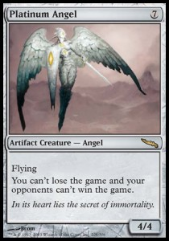
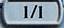

Creatures
|
Muy bien es hora de hablar de criaturas, en Magic tus criaturas son tus soldados listos para la batalla y acabar con todo lo que tengan de frente,
o bien beneficarte hasta que tu oponente se harte y recoja su deck y se vaya a casa, o por el contrario hacerle la vida imposible a tu oponente, hay muchas maneras
en las que tus criaturas son usadas para determinar el curso del duelo, muchas criaturas en Magic son solo una enorme rama con la que golpeas a tu oponente y su criaturas,
sin embargo muchas de ellas tienen habilidades que pueden ser las que te lleven a la victoria tales como flying, first strike, double strike, trample, deathtouch, haste,
provoke, indestructible, fear, defender, landwalk, protection, regeneration, flash y vigilance estas habilidades las exploraremos mas a fondo en un futuro articulo, por ahora
nos concentraremos en los tipos de criaturas que hay y en como funciona su poder y resistencia. Muy bien para empezar en los tipos de criaturas que existen en el juego Magic the Gathering
debemos remontarnos al principio del juego, un tiempo dominado por humanos, angeles, demonios y vampiros, un tiempo despúes aparecieron muchos otros como soldados, clerigos, hechiceros,
zombies, bestias, elfos, djinn y muchos otros, algunos de los tipos mas interesantes son aquellos que tiene caracteristicas de criatura y de otro permanente como es el caso de las criaturas
artefacto u de las criaturas encatamiento |
|  |
 |
Estas dos cartas son el ejemplo de criaturas con caracteristicas de otro permanente, en el caso del Platinum Angel podemos ver que es una criatura y un artefacto al mismo tiempo,
esto significa que una carta o efecto que altere el estado de un artefacto en juego tambien afectara al Platinum Angel, un caso similar pasa con Kruphix, God of horizons el cual es una
criatura y un encatamiento, claro Kruphix es un caso especial puesto que es un dios tema que tocaremos en otro articulo en un futuro no muy lejano espero |
Power and thougness
¿Que es el poder y resistencia de una criatura? Estas son caracteristicas de suma importancia en el juego de Magic, mientras que el poder refleja el daño que una criatura puede llegar a asignar
la resistencia como la misma palabra lo dice es el daño que una criatura puede recibir antes de ser exterminada  por ejemplo esta criatura tiene 1 de poder y 1 de resitencia,
esto significa que en un combate puede asignar un punto de daño y tolerar un punto de daño, ambas caracteristicas puden ser alteradas mediante hechizos o habilidades.
|
|
En el caso hipotetico de que ambas criaturas se enfrentaran en batalla en igual condición ambas criaturas moririan al final del combate
ya que ambas se asignan daño igual a su resistencia |
|
|
Ahora tenemos el caso de un combate desigual, mientras que el Wild Nacatl es una criatura 1/1 el Eidolon of the great revel es 2/2, esto significa
que al final del combate solo el Wild Nacatl sera destruido producto del daño asignado por el Eidolon |
|
|
Y por ultimo tenemos el ejemplo de una criatura que es destruida por daño letal hecho por un spell, en este caso el famoso Shock atormentando gente
desde tiempos inmemoriables, ya que el Shock asigna 2 puntos de daño a cualquier objetivo que en este caso es el Wild Nacatl cuya resistencia es igual a 1
el pobre gatito terminara con una de sus vidas directamente en el cementerio |